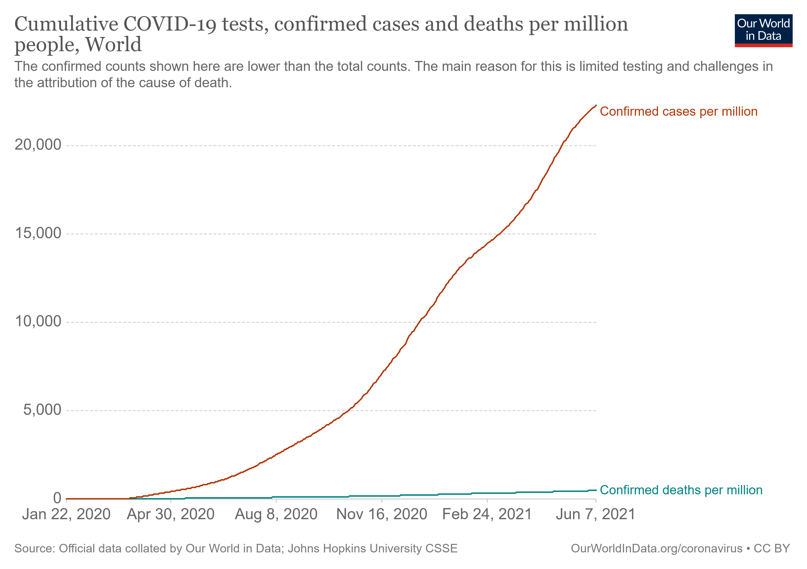
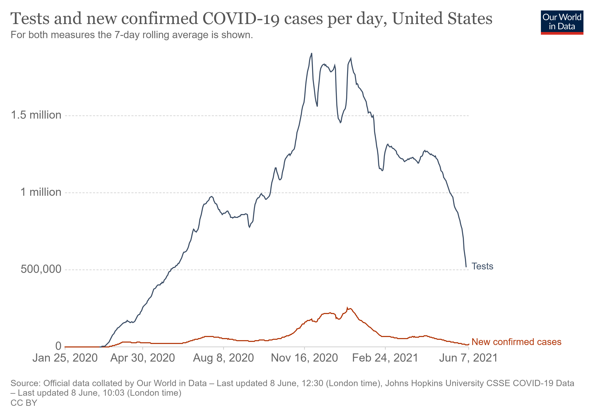

COVID-19 is a new disease.
Among adults, the risk for severe illness from COVID-19 increases with age,
with older adults at highest risk. Severe illness means that the person with COVID-19
may require hospitalization, intensive care, or a ventilator to help them breathe,
or they may even die. People of any age with certain underlying medical conditions
are also at increased risk for severe illness from SARS-CoV-2 infection.
Cummulative Tests and new confirmed COVID-19 cases per day,
All Country

Tests and new confirmed COVID-19 cases per day, United States
